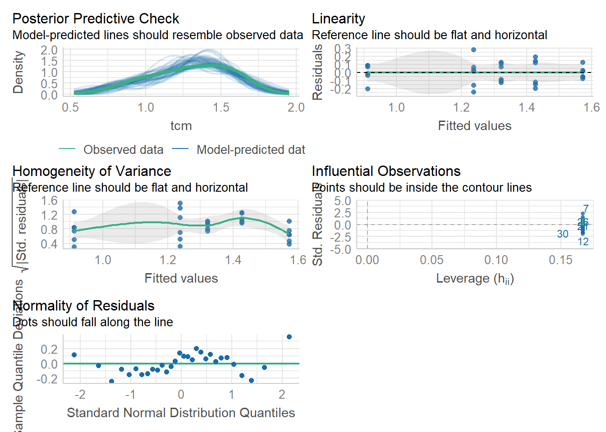
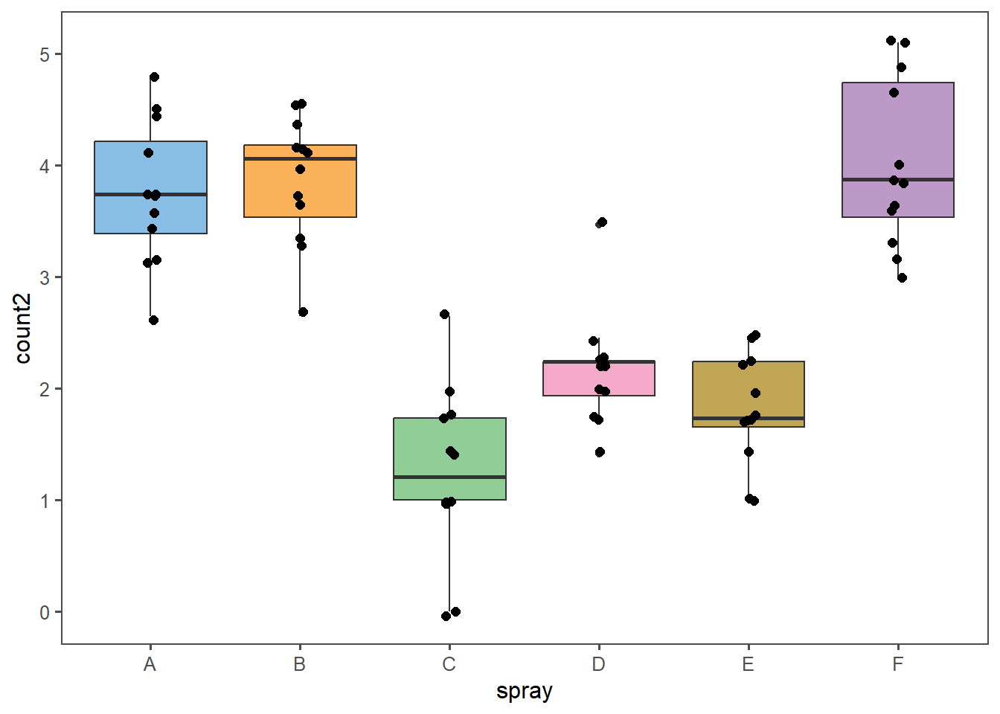
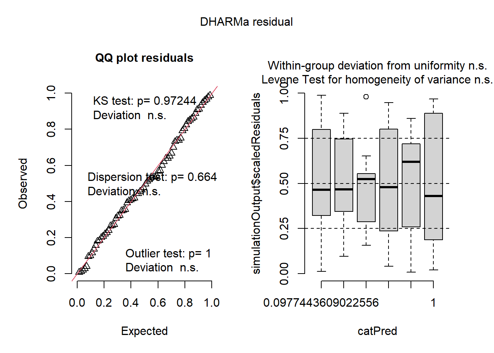
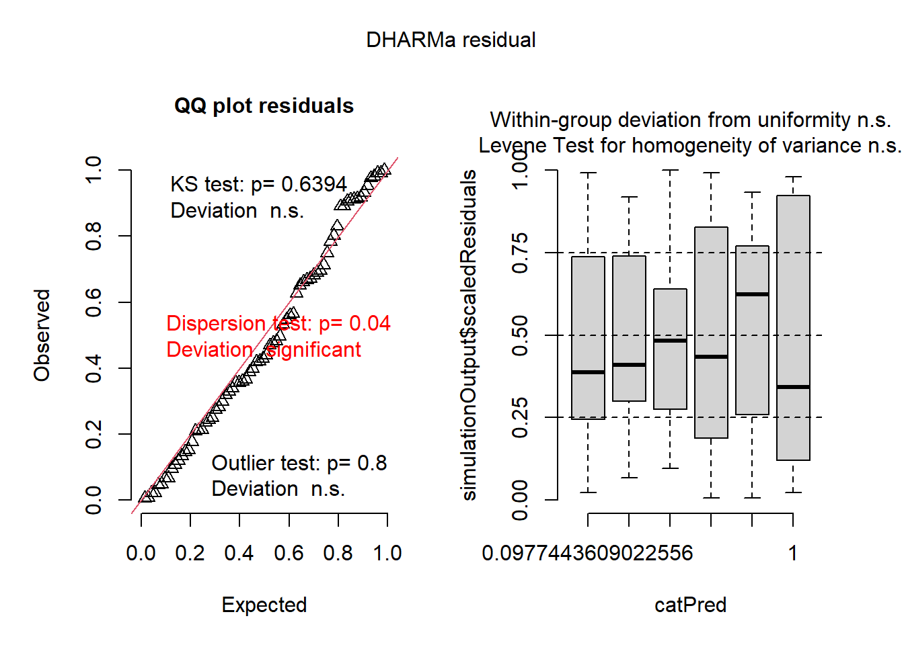

library(gsheet)
library(tidyverse)
library(ggthemes)Análise de Variância (ANOVA)
ANOVA em DIC
A ANOVA é uma técnica estatística normalmente utilizada para comparar as médias de três ou mais grupos distintos e determinar se existem diferenças estatisticamente significativas entre essas médias. A ANOVA é particularmente útil quando se deseja testar a hipótese de que várias populações têm a mesma média.
Aqui veremos como realizar a ANOVA para dados provenientes de experimentos conduzidos em DIC (Delineamento Inteiramente Casualizado) que é uma técnica estatística frequentemente utilizada em experimentos para comparar tratamentos onde a distribuição dos tratamentos às unidades experimentais é feita inteiramente ao acaso. Como não faz restrições na casualização, o uso do DIC pressupõe que as unidades experimentais estão sob condições homogêneas.
Pacotes utilizados:
Importando os dados e vizualizando
micelial <- gsheet2tbl("https://docs.google.com/spreadsheets/d/1bq2N19DcZdtax2fQW9OHSGMR0X2__Z9T/edit#gid=959387827")
#Vizualizar
micelial |>
ggplot(aes(especie, tcm))+
geom_boxplot(fill = "gray")+
geom_jitter(width = 0.1, size = 2)+
theme_few()Realizando a ANOVA
A anova pode ser raalizada através da função aov() ou lm() do R básico. A função lm(), além de realizar< pode ser utilizada para ajustar modelos lineares ao conjunto de dados, portanto é mais completa que a aov().
anova_micelial <- aov(tcm ~ especie, data = micelial)
anova_micelialCall:
aov(formula = tcm ~ especie, data = micelial)
Terms:
especie Residuals
Sum of Squares 1.4695800 0.4679167
Deg. of Freedom 4 25
Residual standard error: 0.1368089
Estimated effects may be unbalancedResumo dos resultados através da função summary():
summary(anova_micelial) Df Sum Sq Mean Sq F value Pr(>F)
especie 4 1.4696 0.3674 19.63 2.03e-07 ***
Residuals 25 0.4679 0.0187
---
Signif. codes: 0 '***' 0.001 '**' 0.01 '*' 0.05 '.' 0.1 ' ' 1Obtendo o quadro da ANOVA com a função anova():
anova(anova_micelial)Analysis of Variance Table
Response: tcm
Df Sum Sq Mean Sq F value Pr(>F)
especie 4 1.46958 0.36739 19.629 2.028e-07 ***
Residuals 25 0.46792 0.01872
---
Signif. codes: 0 '***' 0.001 '**' 0.01 '*' 0.05 '.' 0.1 ' ' 1ANOVA feita com a função lm():
anova_micelial2 <- lm(tcm ~ especie, data = micelial)
anova_micelial2
Call:
lm(formula = tcm ~ especie, data = micelial)
Coefficients:
(Intercept) especieFaus especieFcor especieFgra especieFmer
1.572 -0.335 -0.250 -0.660 -0.145 summary(anova_micelial2)
Call:
lm(formula = tcm ~ especie, data = micelial)
Residuals:
Min 1Q Median 3Q Max
-0.23667 -0.09667 0.01583 0.08833 0.28333
Coefficients:
Estimate Std. Error t value Pr(>|t|)
(Intercept) 1.57167 0.05585 28.140 < 2e-16 ***
especieFaus -0.33500 0.07899 -4.241 0.000266 ***
especieFcor -0.25000 0.07899 -3.165 0.004047 **
especieFgra -0.66000 0.07899 -8.356 1.05e-08 ***
especieFmer -0.14500 0.07899 -1.836 0.078317 .
---
Signif. codes: 0 '***' 0.001 '**' 0.01 '*' 0.05 '.' 0.1 ' ' 1
Residual standard error: 0.1368 on 25 degrees of freedom
Multiple R-squared: 0.7585, Adjusted R-squared: 0.7199
F-statistic: 19.63 on 4 and 25 DF, p-value: 2.028e-07anova(anova_micelial2)Analysis of Variance Table
Response: tcm
Df Sum Sq Mean Sq F value Pr(>F)
especie 4 1.46958 0.36739 19.629 2.028e-07 ***
Residuals 25 0.46792 0.01872
---
Signif. codes: 0 '***' 0.001 '**' 0.01 '*' 0.05 '.' 0.1 ' ' 1Pressuposições da ANOVA e Testes de Médias
A ANOVA possui várias pressuposições fundamentais que devem ser atendidas para que os resultados sejam válidos. Aqui iremos demonstrar diferentes meios de verificar estas presusuposições.
Normalidade dos Resíduos
Os resíduos (diferenças entre os valores observados e as médias dos grupos) devem seguir uma distribuição normal.
Veja diferentes maneiras de como testar a normalidade dos resíduos do conjunto de dados submetido a ANOVA
Opção 1: Teste de Shapiro
shapiro.test(anova_micelial2$residuals) # H0 é de que os resíduos apresentam distribuição normal
Shapiro-Wilk normality test
data: anova_micelial2$residuals
W = 0.9821, p-value = 0.8782Opção 2: Gráfico de histograma para os resíduos
hist(anova_micelial2$residuals)
Opção 3: Utilizando o pacote perfomance
library(performance)
check_normality(anova_micelial2)OK: residuals appear as normally distributed (p = 0.878).Homogeneidade das Variâncias (Homoscedasticidade)
As variâncias dos resíduos devem ser aproximadamente iguais entre os grupos. A violação dessa pressuposição pode levar a resultados incorretos, pois a ANOVA assume que a variabilidade dentro de cada grupo é similar.
Veja maneiras diferentes de verificar esta premissa
Opção 1: Teste de Bartlett
bartlett.test(tcm ~ especie, data = micelial) # H0 é que a variâncias são homogêneas
Bartlett test of homogeneity of variances
data: tcm by especie
Bartlett's K-squared = 4.4367, df = 4, p-value = 0.3501Opção 2: Utilizando o pacote perfomance
check_heteroscedasticity(anova_micelial2)OK: Error variance appears to be homoscedastic (p = 0.880).Otimizando os teste de pressuposições para ANVOA
Você pode utilizar o pacote performance para checar mais pressuposições com a função check_model():
plot_presup <- check_model(anova_micelial2)
plot_presup
O pacote DHARMA também pode ser utilizado para checar normalidade e homoscedasticidade
library(DHARMa)
plot(simulateResiduals(anova_micelial2))
Testes de Comparações Múltiplas
Quando a ANOVA é significativa, isso indica que há pelo menos uma diferença significativa entre as médias dos grupos comparados. No entanto, a ANOVA não especifica quais grupos diferem entre si. Para identificar essas diferenças específicas, é necessário realizar testes de comparações múltiplas.
Um teste amplamente utilizado é o Teste de Tukey, utilizado para comparações múltiplas entre todas as possíveis pares de médias.
Veja como realizá-lo:
#Demonstrando os agrupamentos de médias
library(emmeans)
library(multcomp)
medias_lm <- emmeans(anova_micelial2, ~ especie) # Obtendo as médias do conjunto de dados
medias_lm especie emmean SE df lower.CL upper.CL
Fasi 1.572 0.0559 25 1.457 1.69
Faus 1.237 0.0559 25 1.122 1.35
Fcor 1.322 0.0559 25 1.207 1.44
Fgra 0.912 0.0559 25 0.797 1.03
Fmer 1.427 0.0559 25 1.312 1.54
Confidence level used: 0.95 A função cld() do pacote multcomp separa os grupos de média via Teste Tukey
cld(medias_lm, Letters = letters) especie emmean SE df lower.CL upper.CL .group
Fgra 0.912 0.0559 25 0.797 1.03 a
Faus 1.237 0.0559 25 1.122 1.35 b
Fcor 1.322 0.0559 25 1.207 1.44 b
Fmer 1.427 0.0559 25 1.312 1.54 bc
Fasi 1.572 0.0559 25 1.457 1.69 c
Confidence level used: 0.95
P value adjustment: tukey method for comparing a family of 5 estimates
significance level used: alpha = 0.05
NOTE: If two or more means share the same grouping symbol,
then we cannot show them to be different.
But we also did not show them to be the same. Transformação de dados e alternativas não-paramétricas da ANOVA
E se as pressuposições não forem atendidas?
Neste caso podemos aplicar diferentes transformações nos dados (raiz quadrada, logarítmica ou boxcox), para tentar atender às premissas de normalidade e homogeneidade das variâncias.
Veremos as transformações para um novo conjunto de dados onde as premissas para a ANOVA não são atendidas:
Inseticida <- InsectSpraysTranformação por raiz quadrada e logarítmica
Transformando os dados via raiz quadrada, realizando a ANOVA e testando as pressuposições, temos os seguintes chunks:
Inseticida <- Inseticida |>
mutate(count2 = sqrt(count))
# Vizualizando após a transformação
Inseticida |>
ggplot(aes(spray, count2, fill= spray))+
geom_boxplot()+
geom_jitter(width = 0.05, size = 2)+
theme_few()+
scale_fill_few()+
theme(legend.title = element_blank(), legend.position = "none")
m2 <- lm (count2 ~ spray, data = Inseticida)
anova(m2)Analysis of Variance Table
Response: count2
Df Sum Sq Mean Sq F value Pr(>F)
spray 5 88.438 17.6876 44.799 < 2.2e-16 ***
Residuals 66 26.058 0.3948
---
Signif. codes: 0 '***' 0.001 '**' 0.01 '*' 0.05 '.' 0.1 ' ' 1plot(simulateResiduals(m2))
A transformação logarítima pode ser feita substituindo a função sqrt() por log().
Transformação BoxCox
A transformação Box-Cox é definida por uma família de transformações parametrizadas por lambda (λ)
Processo de aplicação consiste em estimar lambda (λ), calculando a transformação para uma série de valores possíveis de λ (geralmente de -2 a 2, por exemplo) e escolhendo aquela que maximiza a normalidade dos dados transformados. Posteriormente, aplicar a transformação aos dados originais y^(λ), onde y é a variável de interesse.
O pacote MASS possui as funções úteis para realizar essa transformação. Veja:
library(MASS)
b <- boxcox(lm(Inseticida$count+0.1 ~ 1))
lambda <- b$x[which.max(b$y)]
lambda = 0.5
Inseticida$count3 <-(Inseticida$count ^ lambda - 1) / lambdahist(Inseticida$count3)
m3 <- lm (count3 ~ spray, data = Inseticida)
plot(simulateResiduals(m3))
Teste de Kruskal-Walis
Se isso não for eficaz, podem ser utilizados testes não paramétricos, como o teste de Kruskal-Wallis, que não assume normalidade dos dados.
library(agricolae)
kruskal.test(count ~ spray, data = Inseticida)
Kruskal-Wallis rank sum test
data: count by spray
Kruskal-Wallis chi-squared = 54.691, df = 5, p-value = 1.511e-10m3 <- kruskal(Inseticida$count,
Inseticida$spray,
group = TRUE)
m3$statistics
Chisq Df p.chisq t.value MSD
54.69134 5 1.510845e-10 1.996564 8.462804
$parameters
test p.ajusted name.t ntr alpha
Kruskal-Wallis none Inseticida$spray 6 0.05
$means
Inseticida.count rank std r Min Max Q25 Q50 Q75
A 14.500000 52.16667 4.719399 12 7 23 11.50 14.0 17.75
B 15.333333 54.83333 4.271115 12 7 21 12.50 16.5 17.50
C 2.083333 11.45833 1.975225 12 0 7 1.00 1.5 3.00
D 4.916667 25.58333 2.503028 12 2 12 3.75 5.0 5.00
E 3.500000 19.33333 1.732051 12 1 6 2.75 3.0 5.00
F 16.666667 55.62500 6.213378 12 9 26 12.50 15.0 22.50
$comparison
NULL
$groups
Inseticida$count groups
F 55.62500 a
B 54.83333 a
A 52.16667 a
D 25.58333 b
E 19.33333 bc
C 11.45833 c
attr(,"class")
[1] "group"Modelos Lineares Não Generelaziados
Os modelos lineares não generalizados permitem modelar relações entre variáveis dependentes e independentes, mesmo quando a distribuição dos dados não é normal ou quando a variância não é constante.
Você pode utilizar a função glm() do R básico, identificando a distribuição que mais adequa aos seus dados no argumento family =.
Aqui assumimos a distribuição de poisson.
m4 <- glm(count ~ spray,
family = poisson,
data = Inseticida)
m4
Call: glm(formula = count ~ spray, family = poisson, data = Inseticida)
Coefficients:
(Intercept) sprayB sprayC sprayD sprayE sprayF
2.67415 0.05588 -1.94018 -1.08152 -1.42139 0.13926
Degrees of Freedom: 71 Total (i.e. Null); 66 Residual
Null Deviance: 409
Residual Deviance: 98.33 AIC: 376.6anova(m4)Analysis of Deviance Table
Model: poisson, link: log
Response: count
Terms added sequentially (first to last)
Df Deviance Resid. Df Resid. Dev
NULL 71 409.04
spray 5 310.71 66 98.33plot(simulateResiduals(m4))
medias4 <- emmeans(m4, ~ spray, type = "response")
cld(medias4, Letters = letters) spray rate SE df asymp.LCL asymp.UCL .group
C 2.08 0.417 Inf 1.41 3.08 a
E 3.50 0.540 Inf 2.59 4.74 ab
D 4.92 0.640 Inf 3.81 6.35 b
A 14.50 1.099 Inf 12.50 16.82 c
B 15.33 1.130 Inf 13.27 17.72 c
F 16.67 1.179 Inf 14.51 19.14 c
Confidence level used: 0.95
Intervals are back-transformed from the log scale
P value adjustment: tukey method for comparing a family of 6 estimates
Tests are performed on the log scale
significance level used: alpha = 0.05
NOTE: If two or more means share the same grouping symbol,
then we cannot show them to be different.
But we also did not show them to be the same.